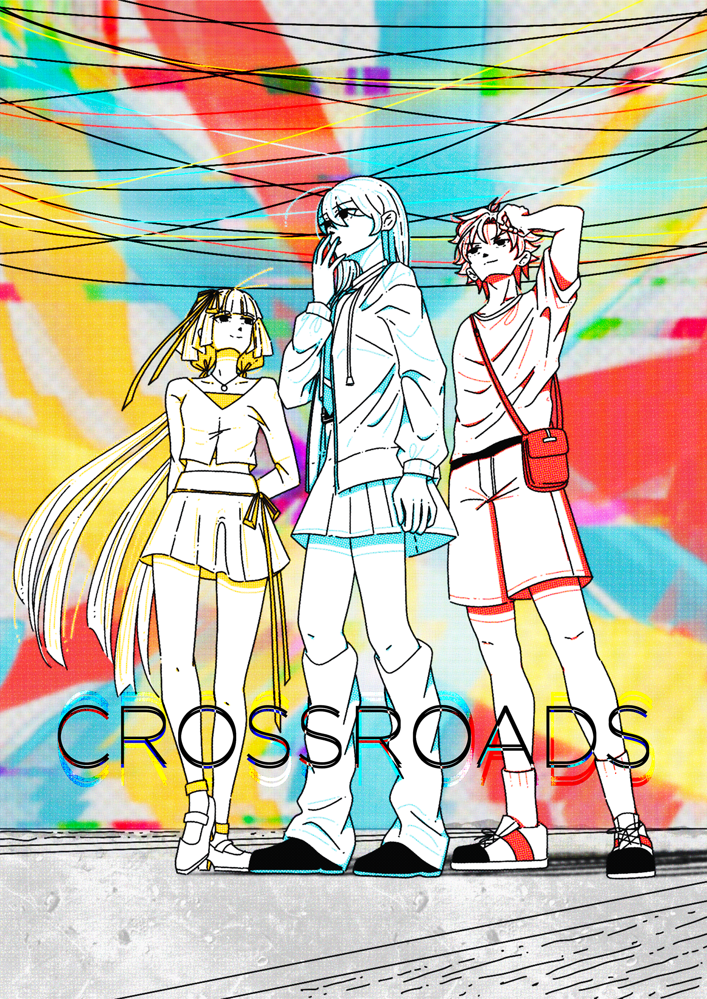

PROJECT / 02
CROSSROADS
PROJECT DESCRIPTION
“I want to befriend them, they seem like a nice friend...”
Nothing will come after that if we just stop at looking at people from afar and make assumptions even though we want to make friends. The alleyways where Thu, Dan, and Duong meet in their same dream - taken inspiration from Vietnamese Hems where the crossroads and cables intertwine with each other crazily just like humans' connections!
Scroll down for more details
